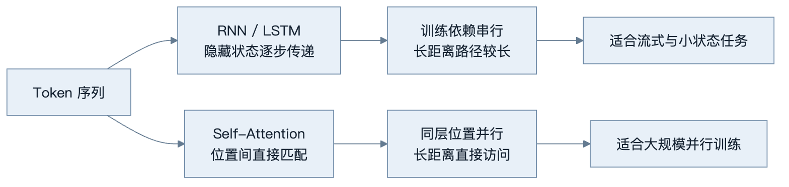
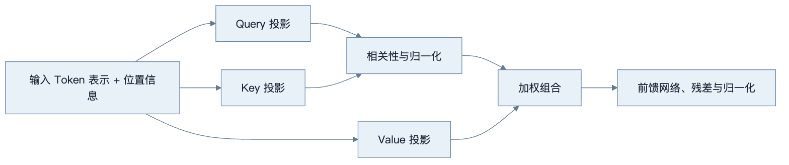
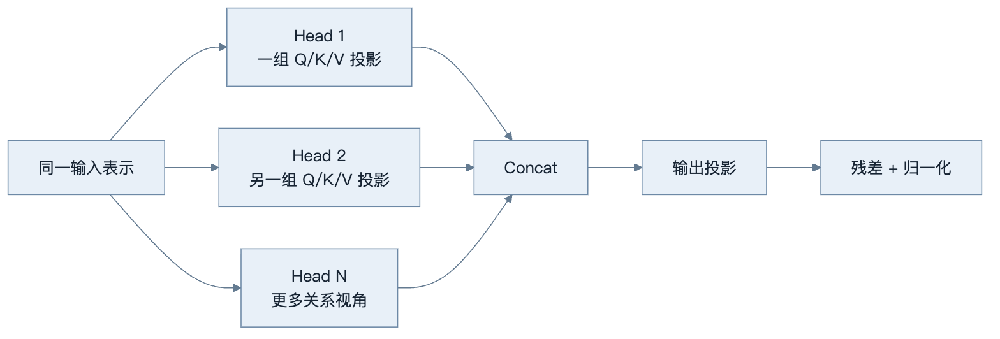
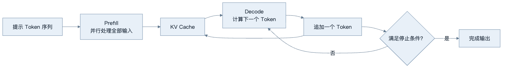

第3章：Transformer 与 Attention
最后核对日期：2026-07-10。
章节导读与学习目标
本章用工程视角解释 Transformer 的数据流，而不展开完整公式。读完后，你应能说明 RNN 的串行限制、Self-Attention 中 Query/Key/Value 的职责、Multi-Head Attention 的动机、位置编码的必要性，以及 Decoder-only 模型为何适合自回归生成。
前置知识为向量、Softmax 的直觉和第2章 Token 概念；本章核心示例只使用 Python 标准库。
从序列递归到 Attention
RNN 把前一步隐藏状态传给后一步，天然表达顺序，但训练难以沿序列充分并行，长距离信息还需要经过许多状态转移。Attention 允许当前位置直接参考其他位置。可以把 Query 理解为“当前位置要找什么”，Key 是“每个位置提供什么匹配线索”，Value 是“匹配后实际取回什么内容”。Query 与 Key 形成相关性权重，权重再对 Value 加权汇总。
下图比较序列信息从递归传递到直接内容寻址的变化，重点是训练依赖路径和长距离访问方式，而不是简单宣称新架构在所有任务上都更好。

上支路的每一步依赖前一步隐藏状态，下支路在同一层同时计算多个位置。Transformer 仍需位置表示、掩码和较高的长序列内存，因此不是无条件替代所有递归结构。
Multi-Head Attention 使用多组投影，让模型可以同时学习不同关系，例如局部搭配、指代、结构边界或代码依赖。这里的“头”不是预先指定语法功能，每个头的行为由训练形成，也不保证始终具有可直接命名的解释。
相关性通常由 Query 与 Key 的点积得到，再按维度缩放并经过 Softmax 归一化。缩放能避免维度增大后分数绝对值过大、Softmax 过度饱和。权重随后用于组合 Value。注意力权重只说明这一层如何读取 Value，不等于某个词对最终结论的因果贡献，因为信息还会经过投影、残差连接、归一化、前馈网络和后续层。

图表示一层的抽象数据流。模型会堆叠许多层，使每个位置逐步获得更丰富的上下文表示。位置编码或旋转位置等机制向模型提供顺序信息；没有它们，交换 Token 位置可能无法被纯 Attention 正确区分。
单个注意力头只有一组投影。下图说明 Multi-Head Attention 怎样并行形成多组读取结果，再拼接回统一表示；“局部关系”等标签只是直觉示例，并非预先指定的固定职责。

从左向右阅读时，多个头互不共享投影参数，但共同参与最终表示。不能因为某次可视化呈现某种模式，就把某个头永久命名为语法头或事实头。
编码器、解码器与掩码
编码器可以双向读取整个输入，适合表示与分类；原始 Transformer 解码器在生成时使用因果掩码，使某位置只能看到它之前的 Token，避免训练时偷看答案。Decoder-only LLM 把提示和已生成内容放进同一序列，通过因果掩码逐 Token 续写。模型服务常用 KV Cache 保存已计算的 Key/Value，减少生成每个新 Token 时的重复计算。
下图把 Decoder-only 的一次请求拆成 Prefill 和反复 Decode 两段，帮助定位长输入与长输出分别消耗在哪里。

Prefill 主要受输入长度影响，Decode 具有逐 Token 串行依赖。KV Cache 减少重复计算，却随上下文、并发和层数占用显存，不能消除长输出延迟。
Transformer 容易在加速硬件上并行训练，是规模化的重要原因，但并非没有代价。标准 Attention 对长序列的计算与内存开销较高；固定窗口限制可见历史；内部表示难以调试；概率生成也不提供事实保证。长上下文优化、稀疏 Attention 与外部检索是不同缓解路线，不能混为一种技术。
Position Encoding 与长度
纯 Attention 不带天然顺序感，因此需要位置相关信号。原始 Transformer 使用正弦和余弦位置编码，后续模型还使用可学习位置、相对位置偏置或旋转位置编码等方案。应用开发者通常不直接选择这些实现，但必须理解：扩展窗口并不只是修改一个配置数字，模型还要在训练或适配中学会利用相应位置范围。
Decoder-only 的适用边界
Decoder-only 架构能把文档、代码、对话与工具轨迹统一为“给定前文生成后文”，适合大规模自回归预训练。这不表示编码器已经过时。Embedding、分类和重排可能更适合编码器，翻译等任务也可使用编码器-解码器。架构选择取决于任务与部署约束，不是参数规模排名。
最小代码与调试
下面只演示“按匹配分数加权 Value”的思想，不是完整 Attention：
import math
scores = [1.2, 0.3, -0.4]
values = [10.0, 20.0, 50.0]
weights = [math.exp(x) for x in scores]
weights = [x / sum(weights) for x in weights]
context = sum(w * v for w, v in zip(weights, values, strict=True))
print(round(context, 2))
调试时不要把可视化注意力权重直接当作因果解释。权重能帮助观察模式，但模型行为还经过 Value、残差连接、后续层和非线性变换。工程上更可靠的是对输入做受控扰动、运行消融实验并测量任务指标。
完整实验：单头缩放点积 Attention
下面用标准库展示一个 Query 对多个 Key/Value 的计算。它没有训练、批次、多头和掩码，但保留了主要数据流：
from math import exp, sqrt
def dot(left: list[float], right: list[float]) -> float:
if len(left) != len(right):
raise ValueError("向量维度必须一致")
return sum(x * y for x, y in zip(left, right, strict=True))
def attend(
query: list[float], keys: list[list[float]], values: list[list[float]]
) -> list[float]:
if not keys or len(keys) != len(values):
raise ValueError("Key 与 Value 必须非空且数量一致")
scores = [dot(query, key) / sqrt(len(query)) for key in keys]
denominator = sum(exp(score) for score in scores)
weights = [exp(score) / denominator for score in scores]
return [
sum(weight * value[i] for weight, value in zip(weights, values, strict=True))
for i in range(len(values[0]))
]
加入因果掩码时，要在 Softmax 之前把不可见位置的分数设为极小值，而不是在加权后删除 Value。练习中应补充空 Query、Value 维度不一致和数值稳定性测试。
工程调试、性能与安全
模型服务常把一次生成分为 Prefill 和 Decode：前者处理全部输入，后者逐 Token 生成。长输入主要增加 Prefill 成本；长输出带来更多串行 Decode 步骤。KV Cache 避免重复计算既有 Token 的 Key/Value，却会消耗显存并随并发和长度增长。量化、批处理、Paged Attention 与推测解码优化的是不同瓶颈。
调试张量形状时，应显式标注 batch、sequence、head、head dimension；验证因果掩码时，可在后文放置明显答案，确认前面位置无法读取。Attention 本身不会区分可信指令和恶意文档，不可信内容与高权限工具仍需要外部隔离、最小权限和审批。
误区、安全、总结与练习
常见误区：Attention 等于人类注意；某个头必然对应某条语法规则；Transformer 可以无限处理上下文；模型能注意到文本就会遵守文本。特别是最后一点，不可信内容可能被模型错误当作指令，因此权限边界必须在模型之外。
总结：Transformer 用 Attention 建立位置间的内容相关连接，以并行性和可扩展性推动了 LLM。练习：手算三个 Token 的归一化权重；为完整实验加入因果掩码；比较“扩大上下文”和“使用检索”的成本与时效。面试问题：KV Cache 优化了什么、不能优化什么？Encoder-only 与 Decoder-only 分别适合哪些任务？为什么注意力图不等于因果解释？
延伸阅读：Vaswani et al., Attention Is All You Need；Dao et al., FlashAttention。本章代码目录为 examples/attention_demo/，已用 Python 3.12 与 NumPy 2.5.1 验证张量形状、稳定 Softmax、因果 Mask、多头变形，并生成 SVG/PNG 热力图。图中的权重只用于机制教学，不构成因果解释。
本章引用
以下资料用于支撑本章的核心原理、工程边界与版本敏感说明：